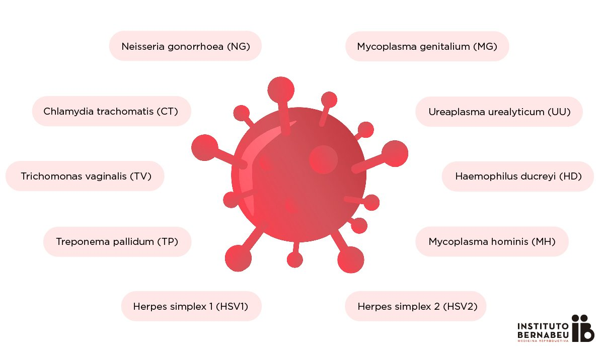

¿Qué son las enfermedades de transmisión sexual?
Las enfermedades de transmisión sexual (ETS) o infecciones de transmisión sexual (ITS) son infecciones que se transmiten de una persona a otra a través del contacto sexual. El contacto suele ser vaginal, oral o anal. Pero a veces pueden transmitirse a través de otro contacto físico íntimo. Esto se debe a que algunas ETS, como el herpes y el VPH, se transmiten por contacto de piel a piel.
¿Qué causa las enfermedades de transmisión sexual?
Las causas de las ETS pueden ser bacterias,virus y parásitos.Ver
¿Cuáles son los síntomas de las enfermedades de transmisión sexual?
Las ETS no siempre presentan síntomas, o solo pueden causar síntomas leves. Por lo mismo, es posible tener una infección y no saberlo, aunque de todas formas se pueda transmitir a otras personas.
Si hay síntomas, pueden incluir:
-
Secreción inusual del pene o la vagina.
-
Llagas o verrugas en el área genital.
-
Micción frecuente o dolorosa.
-
Picazón y enrojecimiento en el área genital.
-
Ampollas o llagas en o alrededor de la boca.
-
Olor vaginal anormal.
-
Picazón, dolor o sangrado anal.
-
Dolor abdominal.
-
Fiebre.